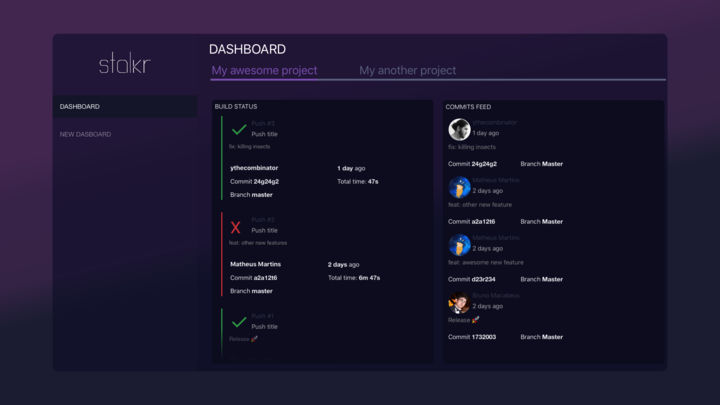
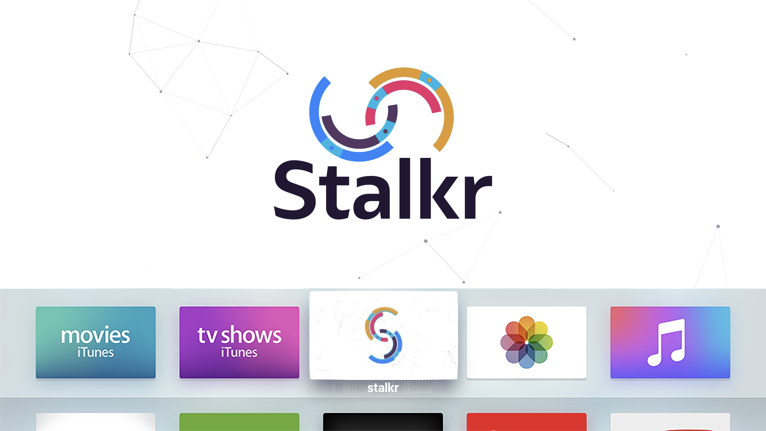

Modern application & infrastructure monitoring tools.



stalkr is a simple–yet powerful–set of tools which gathers data from both continuous integration and application infrastructure monitoring tools in order to make it easier to monitor the whole developing process, in a way the entire team can see at a glance, from the very first commit to the final release.
Don't waste your time: download it now on the App Store.
Choose the right micro services to handle the monitoring tools your application stack already uses and deploy them to PaaS of your choice.
Point both stalkr clients and your services notifications APIs to the endpoints you've set in the previous step!
stalkr is entirely built with extensibility in mind: our plugins-based architecture ensures that you can pick and deploy only the right portions of code (client + server) related to the tools you want us to integrate with–and you can write yours too: if you want, for example, to integrate with a repository management service for which there's no integration already developed, you can simply write one on your own!

One of our engineers draft this picture when he first taught his 15-years-old nephew–and guess what? He got it!
Although our experimental release is a simple client made for the TV, we do intend to make stalkr clients available on as much platforms as possible, which include:


You'll use it to quickly and easily find open-source packages to speed your development. It basically discovers all the available stalkr plugins in popular back-end registries out there–e.g. node.js-based plugins available npmjs.com registry can be discovered if they contain stalkr-plugin value in keywords field of package.json.
You'll use it to quickly bootstrap and deploy your packages right from your terminal. It basically works as an abstraction layer over commom CLI tools used to get a stalkr package up and running.
It'll be a SaaS which behaves as one our revenue stream and helps your organizing your projects across organizations, teams, roles etc.